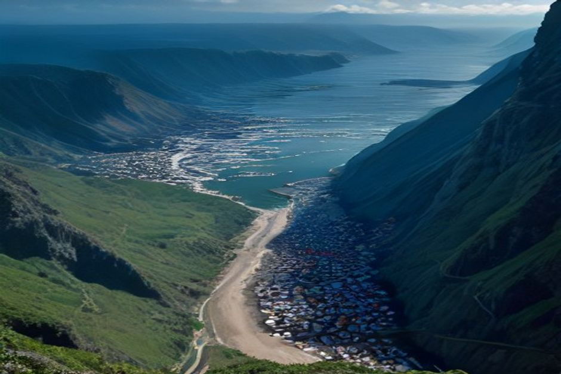

Fajã dos Padres ist ein Streifen bewirtschaftetes Land, eingeklemmt zwischen einer 300 Meter hohen Klippe und dem Atlantik an Madeiras Südküste, ganz ohne Straßenanbindung — man kommt nur per Seilbahn oder per Boot hin. Es ist einer der wenigen Orte auf der Insel, an dem man wirklich von den Felsen aus baden kann, und die beiden Zugangswege bieten fast gegensätzliche Erlebnisse derselben kleinen Bucht.
Was ist Fajã dos Padres?
Fajã dos Padres ist eine Fajã — eine Ebene aus flachem, fruchtbarem Land, entstanden durch einen alten Erdrutsch oder Lavastrom — direkt auf Meereshöhe unterhalb der Klippen nahe Câmara de Lobos, etwa 15 Minuten westlich von Funchal über die Straße bis zum Klippenrand, oder eine kurze Fahrt mit dem Boot. Der Name bedeutet „die Fajã der Priester": Jesuitenpater bewirtschafteten das Land seit dem 18. Jahrhundert und pflanzten die Malvasia-Trauben an, die bis heute im Madeirawein verwendet werden. Sie befindet sich in Privatbesitz und wird als aktiver Bio-Bauernhof geführt, zertifiziert seit 2008, mit Bananen, Mangos, Avocados und Weinreben auf Terrassen, die zum Wasser hinabstufen.

Wie kommt man hinunter zur Fajã dos Padres?
Mit der Seilbahn oder mit dem Boot — eine Straße gibt es nicht. Eine Klippen-Seilbahn überwindet den 300-Meter-Abstieg seit 2003 und setzt Besucher oben an den Terrassen ab, von wo ein kurzer Fußweg durch die Bananenplantage zum Wasser führt. Über zwei Jahrhunderte davor war der Seeweg der einzige Zugang, und so erreichen auch heute noch die meisten privaten Bootstouren die Fajã. Wer mit dem Boot kommt, überspringt die Seilbahn komplett und landet direkt vor der Bucht — das ist der entscheidende Unterschied, wenn es ums Baden geht und nicht um die Farmführung.
Kann man an der Fajã dos Padres baden und springen?
Ja — es ist einer der besseren Badeplätze an Madeiras Südküste, gerade weil die Klippen sie vor dem Wind schützen, der das Wasser anderswo aufwühlt. An ruhigen Tagen liegt die Bucht glatt und klar, ideal zum Springen direkt vom Boot, zum Schnorcheln entlang der Felsen oder für eine Runde mit dem Paddleboard. Auf der Fajã selbst gibt es zudem ein kleines Salzwasserbecken für Tage, an denen der Atlantikschwell die offene Bucht unruhiger macht. Genau diese Kombination — geschütztes Wasser plus einfacher Zugang vom Meer aus — macht sie zu einem festen Stopp auf privaten Bootsrouten ab Funchal.
Gibt es Sand an der Fajã dos Padres?
Nein. Wie fast überall an Madeiras Küste besteht der Strand hier aus dunklem Vulkankiesel und -gestein statt aus Sand — einen natürlichen Sandstrand gibt es in der Nähe von Funchal nirgends. Barfuß lässt es sich mit etwas Vorsicht gut gehen, aber Badeschuhe machen den Ein- und Ausstieg über die Felsen spürbar angenehmer, besonders wenn man vom Boot aus ins Wasser springt statt vom Ufer hineinzuwaten.
Gibt es ein Restaurant an der Fajã dos Padres?
Ja, direkt am Wasser am Fuß der Seilbahn, mit gegrilltem Fisch und Produkten aus eigenem Anbau — in der Hochsaison ist es beliebt genug, dass sich eine Reservierung lohnt, falls man extra mit der Seilbahn zum Essen herunterfährt. Ein paar Cottages auf dem Anwesen lassen sich zudem für längere Aufenthalte mieten. All das spielt kaum eine Rolle, wenn man per Boot nur kurz vorbeikommt statt zu übernachten — der Reiz vom Wasser aus liegt im Baden und in der Kulisse, nicht im Restaurantbesuch.
Wann ist die beste Zeit für einen Besuch an der Fajã dos Padres?
Später Frühling bis früher Herbst, wenn der Atlantik ruhig genug zum bequemen Baden ist und die Bucht keinen direkten Schwell abbekommt. Am ruhigsten sind meist die Morgenstunden, bevor der nachmittägliche Wind an der Südküste auffrischt — dasselbe Zeitfenster, das auch bei einer Bootstour insgesamt einen frühen Start lohnenswert macht. Außerhalb des Sommers ist das Wasser spürbar kälter, und Baden hört auf, der Hauptgrund für einen Besuch zu sein.
Ist Fajã dos Padres Teil einer Bootstour ab Funchal?
Ja — sie ist einer der beiden Badestopps auf Chifbays privatem Day Trip ab Marina do Funchal. Nach Câmara de Lobos und der Drohnenaufnahme bei Cabo Girão ankert das Boot an der Fajã dos Padres zum Baden, Reinspringen und Paddeln, bevor es zu einem zweiten Bad in Ribeira Brava geht und, bei der 3-Stunden-Option, weiter bis Ponta do Sol. Wer diesen Weg wählt, überspringt die Seilbahn-Warteschlange komplett und landet direkt dort, wo das Baden tatsächlich stattfindet.
Zwei Jahrhunderte Priester, Bananen und eine Seilbahn — aber dem Wasser ist egal, wie man hergekommen ist.
Egal auf welchem Weg man ankommt, Fajã dos Padres ist einer der wenigen Orte an dieser Küste, an denen das Baden der eigentliche Sinn der Sache ist — Klippe, Bauernhof und alles inklusive.